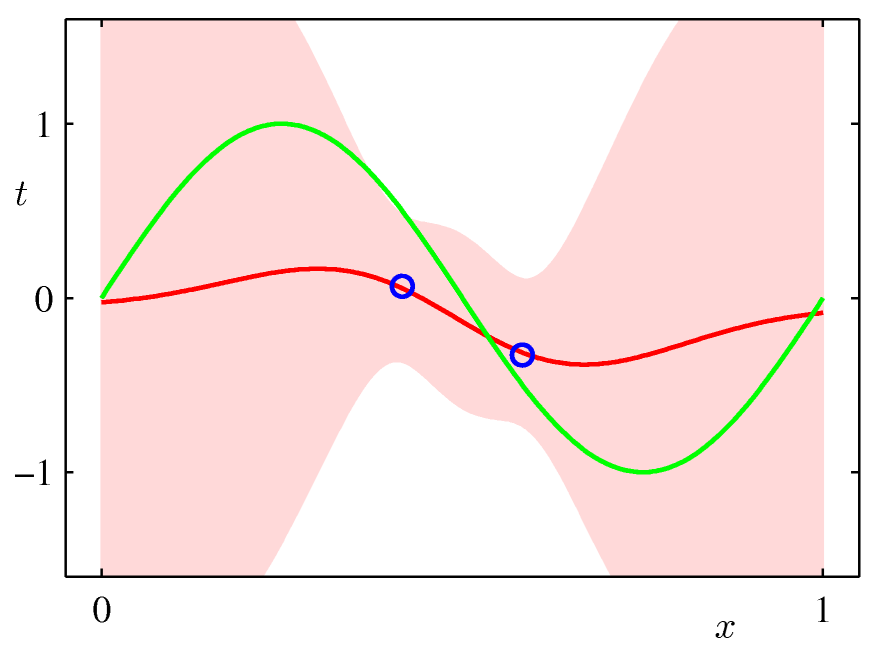
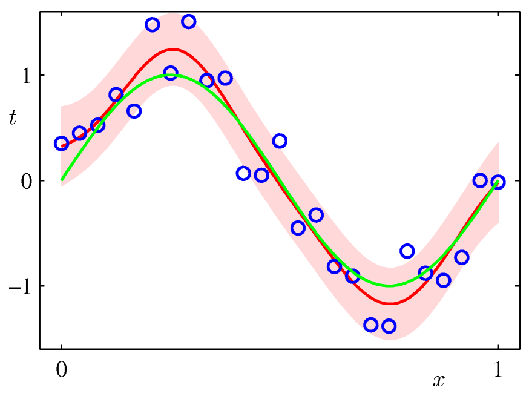

INTRODUCTION TO
BAYESIAN INFERENCE – PART 2
CHRIS BISHOP

Personal Healthcare Revolution
Electronic health records (CFH)
Personal genomics
(DeCode, Navigenics, 23andMe)
X-prize: first $10k human genome technology
NIH: $1k by 2014
Microsoft Research Cambridge:
PhD Scholarships
Internships: 3 months
Postdoctoral Fellowships


Why Probabilities?
Image vector
Class “cancer” or “normal”

Decisions
One-step solution
train a function to decide the class
Two-step solution
inference : infer posterior probabilities
decision : use probabilities to decide the class

Minimum Misclassification Rate

Why Separate Inference and Decision?
• Minimizing risk (loss matrix may change over time)
• Reject option
• Unbalanced class priors
• Combining models

Loss Matrix
Decision
True class


Minimum Expected Loss
Regions are chosen, at each x, to minimize

Reject Option

Unbalanced class priors
In screening application, cancer is very rare
Use “balanced” data sets to train models, then
use Bayes’ theorem to correct the posterior
probabilities

Combining models
Image data and blood tests
Assume independent for each class:

Binary Variables (1)
Coin flipping: heads=1, tails=0
Bernoulli Distribution

Expectation and Variance
In general
For Bernoulli

Likelihood function
Data set
Likelihood function


Prior Distribution
Simplification if prior has same functional form
as likelihood function
Called conjugate prior

Beta Distribution

Posterior Distribution


Posterior Distribution

Properties of the Posterior
As the size N of the data set increases

Predictive Distribution
What is the probability that the next coin flip
will be heads?


The Exponential Family
where ´ is the natural parameter
We can interpret g(´) as the normalization
coefficient


Likelihood Function
Give a data set,
Depends on data through sufficient statistics


Expected Sufficient Statistics


Conjugate priors
For the exponential family
Combining with the likelihood function, we get
Prior corresponds to º pseudo-observations with statistic Â

Bernoulli revisited
The Bernoulli distribution
Comparing with the general form we see that
and so
Logistic sigmoid

Bernoulli revisited
The Bernoulli distribution in canonical form
where

The Gaussian Distribution

Likelihood Function

Bayesian Inference – unknown mean
Assume ¾2 is known
Data set
Likelihood function for ¹

Bayesian Inference – unknown mean
Conjugate prior is a Gaussian
which gives a Gaussian posterior

Bayesian Inference – unknown precision
Now assume ¹ is known
Likelihood function for precision ¸ = 1/¾2

Conjugate prior
Gamma distribution

Unknown Mean and Precision
Likelihood function
Gaussian-gamma distribution

Gaussian-gamma Distribution

Linear Regression (1)
Noisy sinusoidal data

Linear Regression (2)
Linear combination of basis functions
Noise model
Likelihood function

Linear Regression (3)
Polynomial basis functions

Linear Regression (4)
Define a conjugate prior over w
Combining with likelihood function gives the posterior
where

Simple Example (1)
Data from straight line with Gaussian noise
First order polynomial model

Simple Example (2)
0 data points observed
Prior
Data Space

Simple Example (3)
1 data point observed
Likelihood
Posterior
Data Space

Simple Example (4)
2 data points observed
Likelihood
Posterior
Data Space

Simple Example (5)
20 data points observed
Likelihood
Posterior
Data Space

Predictive Distribution (1)
Predict t for new values of x by integrating over w:
where

Predictive Distribution (3)
Example: Sinusoidal data, 9 Gaussian basis functions,
1 data point


Predictive Distribution (4)
Example: Sinusoidal data, 9 Gaussian basis functions,
2 data points

Predictive Distribution (5)
Example: Sinusoidal data, 9 Gaussian basis functions,
4 data points


Predictive Distribution (6)
Example: Sinusoidal data, 9 Gaussian basis functions,
25 data points

Bayesian Model Comparison (1)
Alternative models Mi, i=1, …,L
Predictive distribution is a mixture
Model selection: keep only most probable model

Bayesian Model Comparison (2)
From Bayes’ theorem
posterior
model evidence
prior
(marginal likelihood)
For equal priors, models ranked by marginal likelihood

Bayesian Model Comparison (4)
For a model with parameters w
Note that

Bayesian Model Comparison (5)
Consider model with a
single parameter w


Bayesian Model Comparison (6)
Taking logarithms, we obtain
Negative
With M parameters, all assumed to have the same
ratio , we get


Linear Regression revisited
Marginal likelihood


Linear Regression revisited
Noisy sinusoidal data

Linear Regression revisited
Polynomial of order M ,

Bayesian Model Comparison
Matching data and model complexity